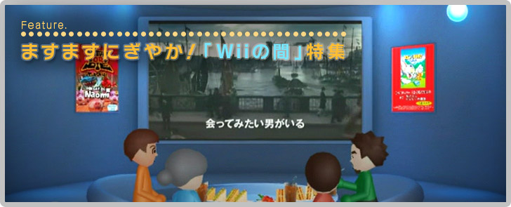
『Wiiの間』には、無料のオリジナル番組を楽しめる「Wiiの間テレビ」と、有料の「Wiiポイント」を使って映画やアニメなどをレンタルして視聴できる「シアターの間」があります。
「Wiiの間テレビ」では、料理から科学まで、さまざまなジャンルのちょっと役に立つ＆ためになる番組や、ちょっとした息抜きに楽しめる番組がたくさん集まっています。
「シアターの間」では、すでに約1,000作品を超える映画やアニメが目白押しで、毎週のように新作も追加されています。予告編やシリーズ作品の第1話は無料で見ることができるので、定期的にチェックすると思わぬ掘り出しものが見つかるかもしれません。
面白かった番組や作品は、自分のMiiから家族や友だちへおすすめメッセージを送ることができます。著名人のMiiが「コンシェルジュMii」としてあなたの『Wiiの間』を訪れ、おすすめ番組を教えてくれることもあります。
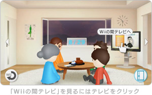

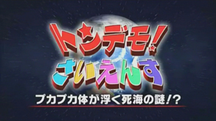
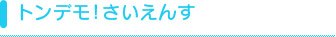
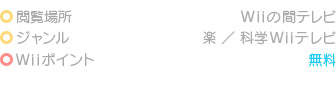
「カブトムシの弱点！」や「フォークボールのなぞ」など、いきものたちの意外な生態からスポーツにかかわる物理現象まで、驚きの実験映像が盛りだくさん。家族みんなで楽しめる科学番組です。
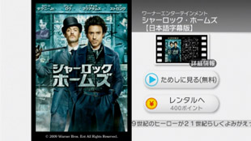
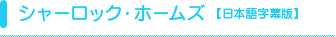
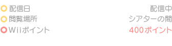
「名探偵」の代名詞とも言える、あのシャーロック・ホームズがシアターの間に登場！ 劇場で見逃してしまった名作・新作映画も、お茶の間にいながらいち早くレンタルすることができます。
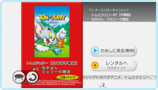
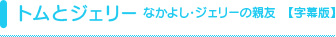
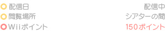
みなさんご存知のドタバタアニメの傑作もシアターの間にやってきました！ 1945年から現在まで続くネコとネズミの長い長い追いかけっこの歴史の中から、厳選したエピソードをお届けします。
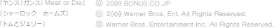
![Contents[1]新しくなった「間」やおすすめコンテンツをご紹介](../common-img/f_bg01.jpg "Contents[1]新しくなった「間」やおすすめコンテンツをご紹介")
![Contents[2]Wiiの間株式会社スタッフに、リニューアルについてのコメントを頂きました](../common-img/f_bg02.jpg "Contents[2]Wiiの間株式会社スタッフに、リニューアルについてのコメントを頂きました")